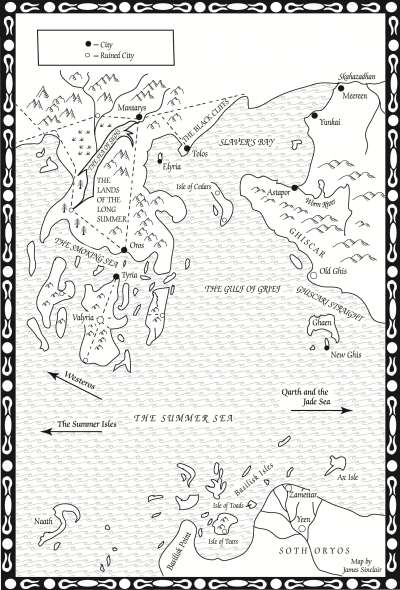

Valyria
Valyria is a long-dead city of wonderment, and was once the capital of a great empire called the Valyrian Freehold. It was destroyed by a cataclysmic event known as the Doom of Valyria 100 years before Aegon’s Landing. The city was located on a peninsula of the eastern continent.. It is the ancestral home of House Targaryen. The city of Valyria lies at the center of the largest surviving island, surrounded by cliffs where the island has broken away from the mainland. Valyria is said to still hold many treasures from before the Doom, such as Valyrian steel blades and items of magical power. Some years ago Gerion Lannister journeyed to Valyria to try to recover the Lannister Valyrian steel sword, Brightroar, but did not return and was presumed lost at sea.
Map on Next page.
